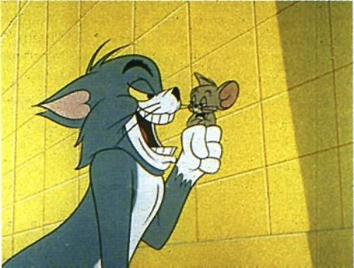

누군가를 내 목적대로 움직이기 위해서는 결코 궁지에 몰아 넣어선 안된다.
"이렇게 하면 너무 오래걸려서 안되고 저렇게 하면 너무 엉망이라 안되. 이제 대체 어쩔꺼야?"
이것은 분명 상대에게 막중한 압력을 줄 수는 있지만 내가 원하는 방향을 선택하게 만드는 데에는 실패할 수도 있다.
반드시 방향을 제시해줘야 한다.
"이것도 안되고 저것도 안되. 이제 남은건 당신이 이렇게 하는 방법 뿐인데. 어쩔꺼야?"
이렇게 노골적이진 않더라도 상대가 느낄 수 있을만큼은 방향을 제시해줘야 한다.
궁지에 몰린 개발자가 무슨 엉뚱한 방법으로 관리자의 뒷통수를 치게 될지 모르기 때문이다!!